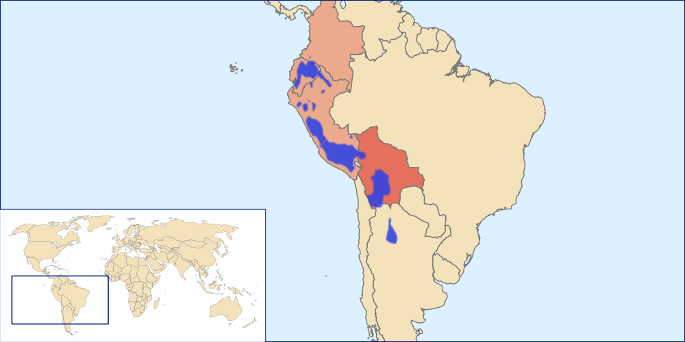
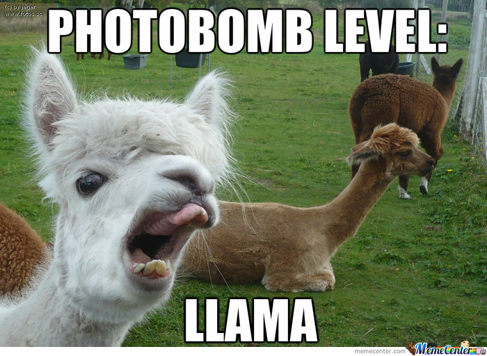
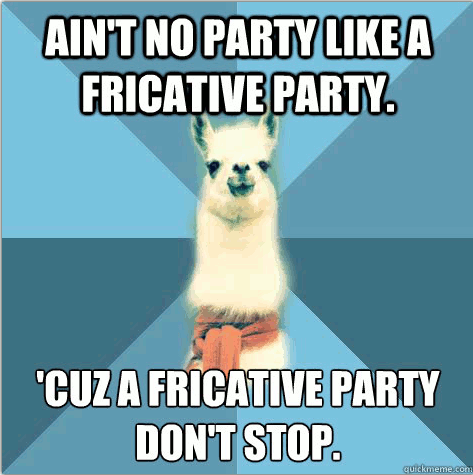
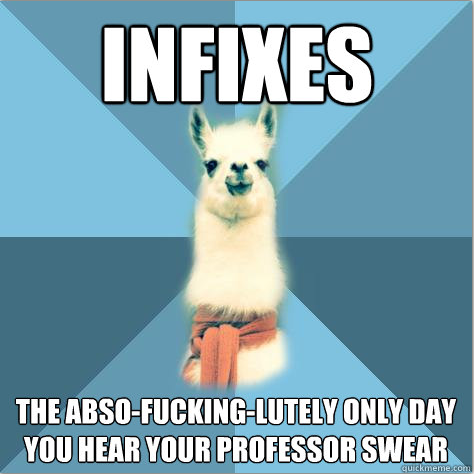
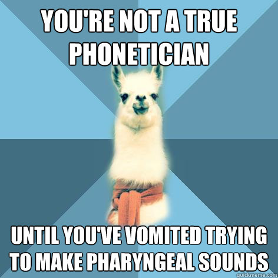
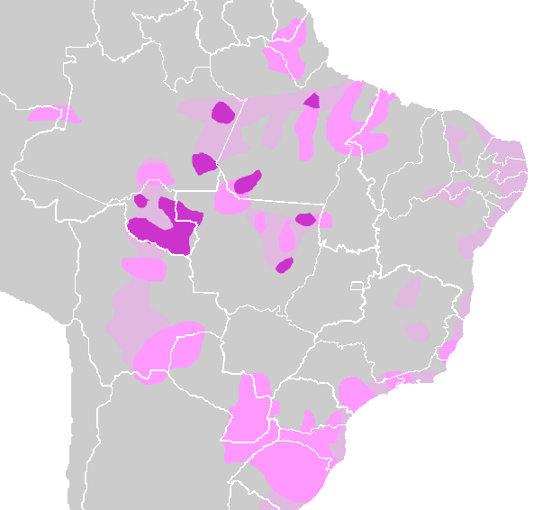
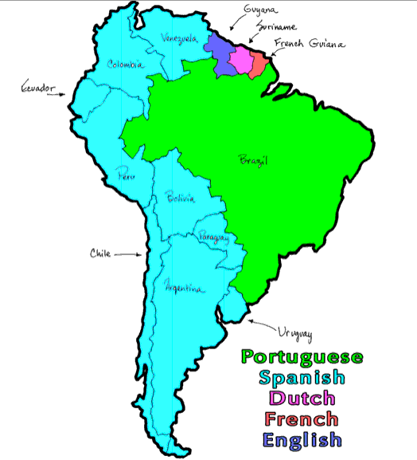
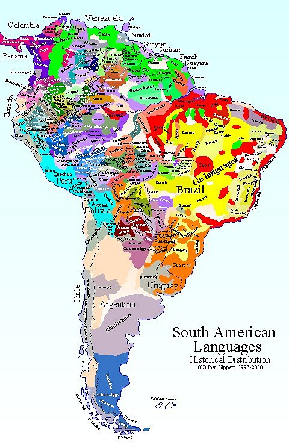

Wayna Picchu - El Condor Pasa
Check your schedules to see if you have a conflict with the final, then email me before Dec 1st!
The final exam review is online!
The final will be ~85 Scantron questions and one long-answer question (100 points total)
The scantron will be a mix of multiple-choice, true/false, and matching
Some language analysis
Recitation is cancelled Friday!
LING 2040 (“Language and Gender”) is being taught by Jessica Holman
This is high-quality sociolinguistics
It fulfills an Arts and Science Diversity requirement
Quechuan languages
Tupian languages
Amazonas
Missionaries and Linguistics

Spoken mostly in Peru, Bolivia, and Ecuador
Around 10 million speakers
May be related to the nearby Aymara Languages
An Official language in Peru, Bolivia, Ecuador
8-10 million speakers
Three vowels (a, i, u)
No voiced/voiceless contrast
SOV, Agglutinating
Inclusive/exclusive pronouns
Lack of writing system often hurts a language’s chances of survival
Written language is a great way to maintain culture!
Only 1/3 of world languages have a writing system
Don’t take “language” to mean “written language”
Coca
Condor
Jerky
Puma
Guano

Did you know that Linguists have their own meme?





Tupi-Guarani is in light pink
Spoken in Brazil and South America
Around 70 languages total
The most widely spoken is Guarani
An official language of Paraguay (along with Spanish)
Spoken both by Europeans and Indigenous folks
Heavily influenced by missionaries and the Jesuits
4.8 Million speakers
Six vowels (+ nasal versions)
Inclusive vs. Exclusive pronouns
Prenasalized stops
Circumfixion!
Nasal Harmony!
(Finally, some new features!)
Prefix - Attaches to the beginning (as in prefix)
Suffix - Attaches to the end (as in loudly)
Infix - Attaches in the middle (Abso-fucking-lutely)
Circumfix - Attaches to both sides
rekororõ
‘You Snore’
nerekororõi
‘You don’t snore’
ojupí
‘They go up’
ndojupíri
‘They don’t go up’
… but I encourage you to try
When nasality spreads throughout the word triggered by a nasal vowel
laseraʔɨ̃ʔɲãkãɣ̃ãpãĩtẽɾei
‘my child is just too stubborn at school’
(Yes, that’s a nasalized fricative.)
Speaking of really weird…



Around 300 languages
The jungle makes it rather easy to be isolated
The Arawakan family is the largest family
Pereltsvaig talks about why
So does “Don’t sleep, there are snakes!”
Business is conducted in a Lingua Franca
Some indigenous groups are merging as populations dwindle
Many populations are now threatened by oil drilling, logging, and ranching
So, we cannot assume that these languages will last, even if they’re isolated
We have a paradox in Linguistics (and anthropology)
This brings up another controversial group!
Historically, lots of linguistic research has been done under the guise of “missionary work”
This does make some sense
Learn the language
Learn about the Culture
Develop a writing system
Write a grammar
Learn the language
Learn about the Culture
Develop a writing system
Write a grammar
Translate the Bible!
Missionaries were doing linguistic descriptions before they were a thing
Many of our early grammars of indigenous languages are from missionaries
Sometimes, the only outsiders to visit a language are missionaries
Many missionaries are also quite linguistically compentent
Dan Everett (the Pirahã guy) started as a missionary
There’s a strong potential for bias
“No no, I don’t need to know your terms for boating…”
“We’re just going to call all of those other Gods”Satan”…”
Missionaries are sometimes sent out without training
“Wayaki is an isolating, polysynthetic language with oral and nasal tones”
“This clearly displays a Nominative/Ergative case system”
… but they always collect data, which can be re-analyzed!
Putting the same text (or story, book, etc) into two different languages
The Jehovah’s Witnesses are particularly prolific translators
There are a shocking number of evangelical videos in odd languages on Youtube
These are really useful in computational linguistics, and really interesting to the rest of us
SIL International is a Faith-based group
They make IPA fonts for computers, language description resources
… and they run the Ethnologue
The SIL folks are top-shelf linguists
… but there’s one fundamental difference between Missionary work and Linguistic work
Linguists and Anthropologists describe languages and cultures
Guarani has a great deal of Spanish in it because of the Jesuits
Religious conversions wipe out religious vocabulary
Cultural changes lead to language changes too
Cultural changes tend to be assimilatory
Linguists change cultures, too!
… but both linguistic description and missionary work play a role in the Circle of Linguistic life.
Quechua is awesome
Guarani is awesome
Amazonas is crazy-diverse
Outsiders play a complex role in language preservation